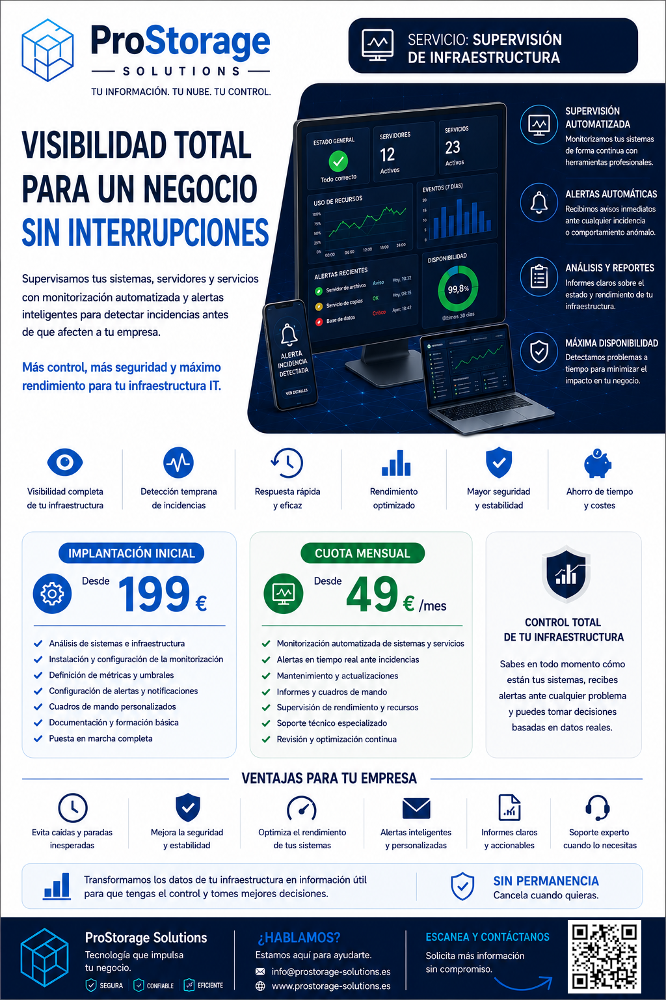

Supervisamos servidores, servicios y recursos críticos para ayudarte a detectar incidencias antes de que provoquen interrupciones.

Detectamos incidencias antes de que los usuarios las reporten.
Supervisamos CPU, memoria y almacenamiento.
Conoce el estado de tu infraestructura en todo momento.
Detectamos patrones y problemas recurrentes.
Supervisión de recursos y disponibilidad.
Avisos ante caídas o incidencias críticas.
Visualización sencilla del estado de la infraestructura.
Resumen del estado general y tendencias.
Instalación, configuración de alertas y puesta en marcha.
Desde 199 €Supervisión, mantenimiento y revisión de alertas.
Desde 49 €/mesControl de recursos y disponibilidad.
Detección rápida de incidencias.
Visibilidad de su infraestructura sin necesidad de personal interno.
Te ayudamos a supervisar servidores y servicios para detectar incidencias antes de que afecten a tu negocio.
Solicitar informaciónSí, configuramos alertas automáticas ante incidencias importantes.
Sí, ambos entornos son compatibles.
No, nosotros nos encargamos de la solución de monitorización.
No.